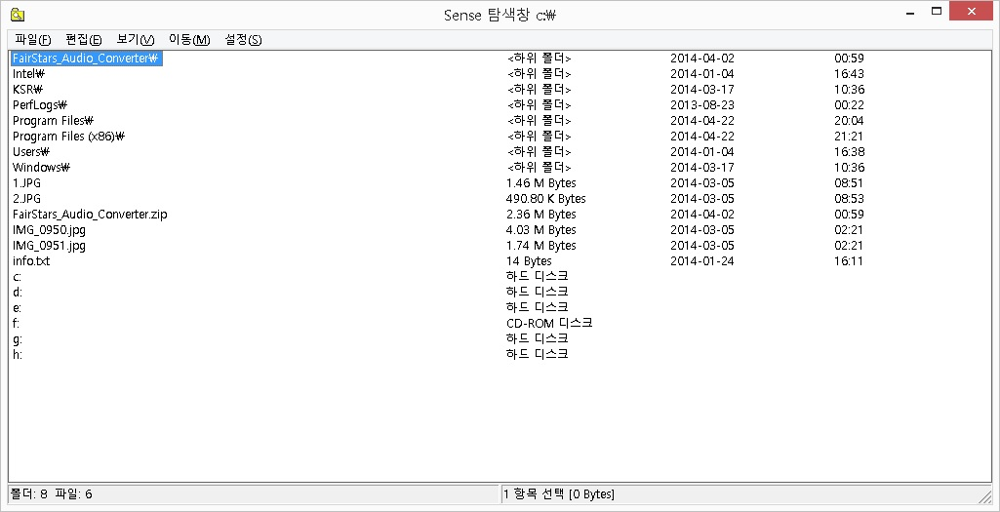
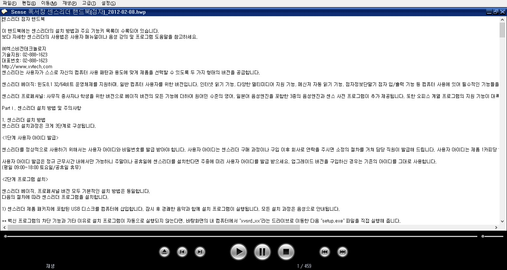

센스 독서기는 센스리더의 부속 프로그램으로써 독서를 위한 전용 프로그램입니다.
센스리더가 시각장애인의 윈도 활용에 있어 전반적 사용을 돕는 프로그램이라면 센스 독서기는 시각장애인의 독서에 알맞게 인터페이스와 기능을 구성한 시각장애인 전용 독서 프로그램이라 할 수 있습니다.
또한 센스 독서기는 기본적인 독서와 관련된 기능 외에도 다양한 폴더 및 파일 관리 기능을 갖추고 있어 시각 장애인 전용 쉘 프로그램의 역할도 수행하고 있습니다.
센스 독서기는 다음과 같은 다양한 기능을 갖추고 있습니다.
센스 독서기는 편리한 독서를 위해 다중 파일 지원, 책갈피 기능, 마크 기능, 블럭 기능, 캡쳐 기능 등의 다양한 기능을 제공합니다.
독서를 위해 기본적인 텍스트 파일뿐만 아니라 hwp, rtf, doc, htm 등의 다양한 파일 형식을 지원합니다.
윈도우즈에서 많이 사용되는 미디어 파일인 mp3, ogg, avi, wma, wmv, asf 등의 파일을 재생할 수 있습니다.
다양한 문서 파일의 편집 기능을 제공하여 텍스트 편집기로써 활용이 가능합니다.
폴더 및 파일의 복사, 삭제, 이동과 관련된 탐색창의 모든 기능을 지원하며, 손쉬운 드라이브 이동 기능과 파일 합치기 기능 등 다양한 폴더 및 파일 관리 기능을 제공합니다.
아래는 센스 독서기에서 사용할 수 있는 파일의 형태와 그 파일을 사용하기 위해 먼저 알아 두어야 할 사항들입니다.
윈도우즈에서 사용되는 대부분의 미디어 파일이 재생 가능합니다. 단, 센스 독서기에서는 미디어 파일 재생을 위해 DirectX를 사용하고 있으며, 버젼 8.0 이상이 설치되어 있는 경우에 정상적으로 동작합니다.
미디어 파일 재생시에는 일반 주 메뉴 대신 팝업 메뉴를 사용합니다. 따라서 메뉴를 사용하고자 하는 경우 <PopUp>키를 눌러 메뉴를 호출한 후, 위, 아래 화살표를 사용하여 메뉴를 선택하여야 합니다.
같은 AVI 형식을 가지고 있더라도 내부적으로는 사용된 코덱의 종류가 다를 수 있습니다. 원활한 동영상 재생을 위해서는 적합한 코덱이 설치되어 있어야 합니다.
HWP문서는 한글 2007에서 작성된 문서까지 사용이 가능합니다. 한글 97까지의 문서의 경우 독서기 자체적으로 재생할 수 있으나, 한글 2002 이상에서 작성된 문서는 해당되는 버전의 한글 프로그램이 설치되어 있어야 정상적으로 문서를 읽을 수 있습니다.
간혹hwp 문서를 읽기 위해 <Enter>키를 눌렀을 때 <한글 Ctrl> 대화상자가 출력되는 경우가 있습니다. 이러한 경우에는 <접근 허용> 버튼을 누르면 문서의 내용을 읽을 수 있습니다.
이 형식들은 모두 Microsoft Word 프로그램의 도움을 받습니다. 이 파일들을 정상적으로 사용하기 위해서는 반드시 Microsoft Word 2000 이상이 설치되어 있어야 합니다.
VBF는 Voice Braille Format의 약자로, 텍스트 수준의 음성출력이 가능한 점자 파일입니다. VBF 파일은 저작권 보호와 데이터 보안성이 우수하며, 목차, 단락 이동, 페이지 이동, 마크 기능 등의 다양한 사용자 편리기능을 지원합니다. 컴퓨터에서는 센스 독서기를 이용해 VBF 파일을 이용하며, 휴대용 기기에서는 MP3, BRF 등의 파일로 변환하여 VBF 콘텐츠를 이용할 수 있습니다.
기본적으로 VBF 콘텐츠는 데이터 보호를 위해 편집이나 클립보드를 이용한 복사가 제한됩니다.
위에 나타난 형식이 아닌 파일들은 모두 텍스트 파일로 간주됩니다. 그렇기 때문에 텍스트 파일은 확장자에 관계없이 사용이 가능합니다.
텍스트 파일은 완성형과 조합형, 유니코드 문서를 모두 지원합니다. 완성형과 유니코드 문서는 독서기에서 자동 재생을 하지만, 조합형 문서의 경우 사용자가 완성형 코드로 변환한 다음 독서를 해야 합니다.
센스 독서기는 크게 독서창과 탐색창의 두 가지 응용 프로그램으로 구성되어 있습니다.
독서창은 실제 독서시에 사용되는 창이고, 탐색창은 폴더와 파일의 탐색 및 관리가 가능한 창입니다.
바탕화면의 '센스 독서기' 아이콘을 실행하면 먼저 독서기의 탐색창이 나타나 원하는 파일을 선택할 수 있게 됩니다. 이곳에서 독서를 원하는 파일을 찾아 <Enter>키를 누르면 독서창이 열리면서 독서가 가능하게 됩니다. 단, 해당 파일 확장자가 독서기 내에서 확장자 연결이 되어 있어야 합니다.
탐색창은 다음과 같이 구성되어 있습니다.

탐색창의 가장 상단에 표시됩니다. 이 제목줄에는 현재 폴더의 위치가 드라이브 이름을 포함하는 완전경로 형태로 나타납니다.
제목줄 아래에 표시되며 탐색창에서 사용되는 주메뉴가 나타납니다.
목록은 메뉴줄과 상태줄 사이의 가장 넓게 표시되는 영역입니다. 이 목록에는 현재 위치의 파일과 폴더들이 나타나게 되며 탐색창 사용의 주요 영역이 됩니다.
탐색창의 가장 하단에 위치하며, 이 상태줄에는 현재 폴더의 하위 폴더 개수, 파일 개수, 선택된 항목 개수 및 선택 파일의 총 용량이 표시됩니다.
독서창은 파일을 재생하거나 편집할 때 직접 사용되는 창입니다. 문서 파일을 열었을 때는 그 파일의 내용이 출력되고, 동영상 파일을 열었을 때는 동영상이 재생됩니다.

독서창을 사용해 문서나 미디어 파일을 재생하는 방법에는 다음 두 가지 경우가 있습니다.
독서기의 탐색창에서 파일을 선택한 후 <Enter>키를 누르면 독서창이 열리면서 독서가 시작됩니다. 단 확장자 지정이 되어 있는 경우에 해당됩니다.
Windows 탐색기에서 팝업키를 눌러 나타나는 팝업 메뉴 중 [센스 독서기로 재생] 항목을 실행하면 독서창이 나타납니다.
1. 독서창이 처음 실행되는 경우에는 초기화를 위해 약간의 시간이 걸릴 수 있습니다. 잠시 기다리면 독서창이 정상적으로 실행될 것입니다.
2. 독서창은 단순히 <ESC>키를 눌러 종료할 수 있습니다. 이때 센스 탐색창을 통해 독서창을 열었던 경우라면 독서창이 닫히고 센스 탐색창으로 돌아가게 됩니다.
일반적으로 어떤 프로그램의 기능을 사용하기 위해서는 그 프로그램의 창이 활성화되어 있어야 합니다. 하지만 독서창의 일부 기능들은 독서창 외부에서도 제어할 수 있도록 공개되어 있습니다. 이를 이용하면센스 독서기와 다른 프로그램을 동시에 사용하는 경우에 도움이 될 수 있습니다. 이 기능은 일반적인 원격제어 기능과는 다릅니다.
독서창이 열려 있는 상태에서는 독서창에 포커스가 되어 있지 않더라도 다음의 키들을 사용해 독서창의 기능을 원격으로 제어할 수 있습니다.
| 기능 | 기능키 | 설명 |
|---|---|---|
| 1줄/10초 전으로 이동 | Ctrl-Shift-위 화살표 | 현재 위치에서 1줄(문서파일)/10초(미디어파일) 전으로 이동 후 재생을 계속합니다. 중지시에는 동작하지 않습니다. |
| 1줄/10초 다음으로 이동 | Ctrl-Shift-아래 화살표 | 현재 위치에서 1줄(문서파일)/10초(미디어파일) 다음으로 이동 후 재생을 계속합니다. 중지시에는 동작하지 않습니다. |
| 이전 파일로 | Ctrl-Shift-PGUP | 다중 파일 재생시 이전 파일로 이동합니다. |
| 다음 파일로 | Ctrl-Shift-PGDN | 다중 파일 재생시 다음 파일로 이동합니다. |
| 일시 중지 및 재생 | Ctrl-Shift-Space | 재생과 일시중지를 토글합니다. |
| 종료 | Ctrl-Shift-x | 독서창을 종료합니다. |
위의 키들은 독서창에 우선권이 있습니다. 그렇기 때문에 어떤 프로그램에 위의 키와 중복되는 경우
그 프로그램의 기능은 사용할 수 없습니다. 따라서 그 기능을 사용하기 위해서는 독서창을 종료한 후 사용해야 합니다.
아래는 독서창에서 사용되는 키들의 목롭입니다. 각 기능에 대한 자세한 설명은 해당 부분의 내용을 참고 하시기 바랍니다.
1. 파일 관련 기능키
| 기능 | 기능키 |
|---|---|
| 파일 열기 | Ctrl-o |
| 파일 저장 | Ctrl-S |
| 모두 저장 | Ctrl-W |
| 다른 이름으로 저장 | Alt-A |
| 이전 파일 | Ctrl-Shift-Tab, Alt-Pgup |
| 다음 파일 | Ctrl-Tab, Alt-Pgdn |
| 마크정보만 저장하고 종료 | Q |
| 마크, 책갈피를 저장하고 종료 | S |
| 마크, 책갈피를 없애고 종료 | X |
| 종료 | Ctrl-F4 |
| 모두 종료 | Escape, Alt-F4 |
2. 이동 관련 기능키
| 기능 | 기능키 |
|---|---|
| 처음으로 | Home, H |
| 끝으로 | End, E |
| 이전 페이지로 | Pgup, P |
| 다음 페이지로 | Pgdn, N |
| 1줄/5초 전으로 | 위 화살표 |
| 1줄/5초 다음으로 | 아래 화살표 |
| 5줄/10초 전으로 | 왼쪽 화살표 |
| 5줄/10초 다음으로 | 오른쪽 화살표 |
| 10줄/1분 전으로 | Ctrl-위 화살표 |
| 10줄/1분 다음으로 | Ctrl-아래 화살표 |
| 50줄/5분 전으로 | Ctrl-왼쪽 화살표 |
| 50줄/5분 다음으로 | Ctrl-오른쪽 화살표 |
| 100줄/10분 전으로 | Alt-왼쪽 화살표 |
| 100줄/10분 다음으로 | Alt-오른쪽 화살표 |
| 이동 줄 전으로 | Ctrl-Pgup |
| 이동줄 다음으로 | Ctrl-Pgdn |
| 이전 단락으로 | Shift-U, Shift-F7 |
| 다음 단락으로 | U, F7 |
| 책갈피로 | Ctrl-Q |
| 이전 마크로 | Shift-I, Shift-F8 |
| 다음 마크로 | I, F8 |
| 이전 목차로 | Shift F2 |
| 다음 목차로 | F2 |
| 이전 개체로 | Shift Tab |
| 다음 개체로 | Tab |
| 특정 위치로 이동 | G, Ctrl-G |
| 문자열 찾기 | Ctrl-f, W |
| 계속 찾기 | F3 |
| 반대로 찾기 | Shift F3 |
3. 재생 관련 기능키
| 기능 | 기능키 |
|---|---|
| 재생 | Ctrl-p |
| 일시중지 및 재생 | Space |
| 중지 | Ctrl-Space |
| 중지 및 재생 | Enter |
| 현재 줄 다시 읽기 | Ctrl-Enter |
4. 마크 관련 기능키
| 기능 | 기능키 |
|---|---|
| 마크 지정 | Ctrl-m |
| 마크로 이동 | Ctrl-j |
| 단축마크1 지정 | M, F5 |
| 단축마크1로 이동 | J, F6 |
| 단축마크2 지정 | Shift m, Shift-F5 |
| 단축마크2로 이동 | Shiftj, Shift-F6 |
5. 목차 관련 기능키
| 기능 | 기능키 |
|---|---|
| 목차 지정 | Ctrl-K |
| 목차 목록 | Ctrl-L |
6. 편집 관련 기능키
| 기능 | 기능키 |
|---|---|
| 블록 지정 | Shift-방향키, Alt-L |
| 전체 선택 | Ctrl-A |
| 실행 취소 | Ctrl-Z |
| 잘라 내기 | Ctrl-X |
| 복사 | Ctrl-C |
| 붙여 넣기 | Ctrl-V |
| 이어 복사 | Ctrl-R |
| 파일로 잘라내기 | Alt-X |
| 파일로 복사 | Alt-C |
| 끼워 넣기 | Alt-V |
| 파일로 이어 복사 | Alt-R |
| 삭제 | Del |
| 현재 줄 삭제 | Ctrl-Y |
| 편집/독서 모드 전환 | Alt-Z |
| 문자열 바꾸기 | Ctrl-H |
7. 설정 관련 기능키
| 기능 | 기능키 |
|---|---|
| 속도 감소 | Shift-왼쪽 화살표 |
| 속도 증가 | Shift-오른쪽 화살표 |
| 높이 감소 | Alt-아래 화살표 |
| 높이 증가 | Alt-위 화살표 |
| 크기 감소 | Shift-아래 화살표 |
| 크기 증가 | Shift-위 화살표 |
| 미디어 크기 감소 | Pgdn |
| 미디어 크기 증가 | Pgup |
| 미디어 속도 감소 | Ctrl-Pgdn |
| 미디어 속도 증가 | Ctrl-Pgup |
| 구두점 읽기 선택 | B |
| 한자 읽기 토글 | /(슬레시) |
| 특수 문자 읽기 토글 | ,(컴마) |
| 음성 메시지 알림 토글 | V, 플러스(+) |
| 사운드 메시지 알림 토글 | -(데시) |
| 억양 넣음 토글 | .(마침표) |
8. 오디오 이퀄라이저 기능
| 기능 | 기능키 |
|---|---|
| 이퀄라이저 선택/해제 | Ctrl-F9 |
| 밴드 선택 | Ctrl-F10 |
| 선택 밴드 수치 감소 | Ctrl-F11 |
| 선택 밴드 수치 증가 | Ctrl-F12 |
9. 기타
| 기능 | 기능키 |
|---|---|
| 현재 줄 정보 | L |
| 현재 파일 정보 | Shift-l |
| 오디오 파일 만들기 | F9 |
| 보조 음성 엔진 토글 | Ctrl-E |
| 개체 목록 | Alt-Shift-O |
| 도움말 | F1 |
아래는 탐색창에서 사용되는 기능키들입니다. 기능에 대한 자세한 설명은 해당 항목에 대한 내용을 참고하시기 바랍니다.
1. 선택 관련 기능키
| 기능 | 기능키 |
|---|---|
| 연속된 항목 선택 | Shift-이동키 |
| 현재 항목 선택 토글 | Space |
| 선택된 항목 해제 및 전체 항목 선택 | Ctrl-U |
| 모든 항목 선택 | Ctrl-A |
2. 파일 관련 기능키
| 기능 | 기능키 |
|---|---|
| 열기 | Ctrl-O |
| 연결 프로그램 설정 | Ctrl-P |
| 폴더 만들기 | Ctrl-M |
| 파일내 문자열 찾기 | Ctrl-F |
| 종료 | Alt-F4>, Esc(설정에 따라 적용됨) |
3. 편집 관련 기능키
| 기능 | 기능키 |
|---|---|
| 폴더에 복사 | Alt-C |
| 폴더로 이동 | Alt-W |
| 삭제 | Del, Alt-D |
| 이름 변경 | F2, Alt-R |
| 통합 복사 | Ctrl-R |
| 잘라내기 | Ctrl-X |
| 복사 | Ctrl-C |
| 붙여넣기 | Ctrl-V |
4. 보기 관련 기능들
| 기능 | 기능키 |
|---|---|
| 정렬 | Ctrl-S |
| 숨은 파일 출력 | Ctrl-H |
| 와일드 카드 사용 | Alt-G |
| 새로 고침 | F5 |
5.이동 관련 기능들
| 기능 | 기능키 |
|---|---|
| 뒤로 | Alt-왼쪽 화살표 |
| 앞으로 | Alt-오른쪽 화살표 |
| 위로 | BackSpace |
| 루트로 | \(백슬레시) |
| 특정 폴더로 | F9 |
| 드라이브 이동 | 대문자 드라이브명 |
6. 기타
| 기능 | 기능키 |
|---|---|
| 현재 폴더 정보 | Ctrl-K |
| 현재 파일 정보 | Ctrl-L |
| 확장자 연결 실행 | Enter |
| 윈도우즈 탐색기 연결 프로그램 실행 | Ctrl-Enter |
| 옵션 전달하여 프로그램 실행 | Shift-Enter |
| 녹음 시작/중지 | Ctrl-Alt-Shift-F12 |
| 녹음 일시정지/다시 시작 | Ctrl-Alt-Shift-F11 |